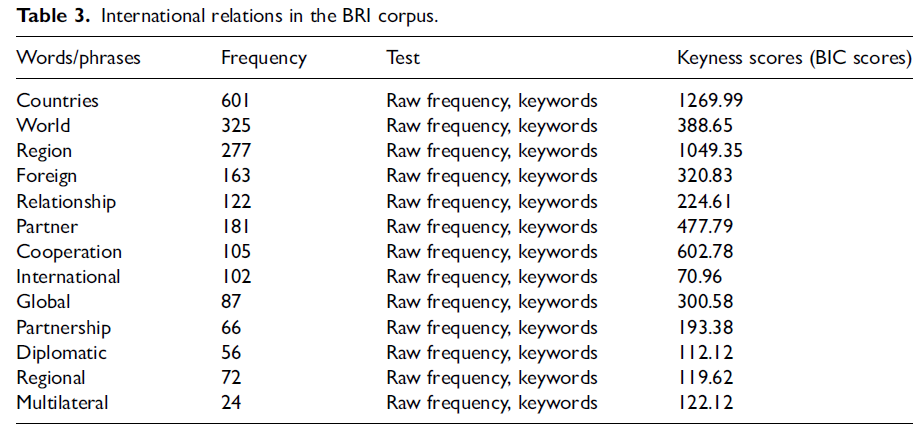

收录于合集

伙伴还是竞争者？
美国外交话语中的“一带一路”倡议
作者： Muhammad Afzaal，上海外国语大学语料库研究院助理教授；Chenxia Zhang，上海交通大学外国语学院博士候选人；Muhammad Ilyas Chishti，巴基斯坦国立科技大学助理教授。
编译： 张鸿儒（国政学人编译员，山东大学英语与国际政治专业）
来源： Afzaal, M., Zhang, C., & Chishti, M. I. (2022). Comrades or contenders: A corpus-based study of China’s Belt and Road in US diplomatic discourse. Asian Journal of Comparative Politics , 0(0), 1-19.
导读
本文 基于语料库方法 ，通过对美国外交官关于“一带一路”倡议公开演讲的批评话语分析， 揭示了相关话语背后所反映出的美国对中国崛起的焦虑。 具体而言，本文作者分别关注主题词、高频搭配和语词索引，具体分析了美国外交官关于“一带一路”倡议的主要关注点、所展示出的中国形象、以及如何构建中国的国家形象。
译者认为，本文将批评话语分析与语料库语言学相结合的研究方法是最值得学习的。正如本文作者所提出的，使用语料库可以发现一些传统定性分析很难发现的规律或现象，而将之与批评话语分析相结合，可以深入分析语料中所隐含的意识形态和权力关系。从美国外交官的话语中可以看出，美国对中国及其“一带一路”倡议充斥着狭隘的偏见。
不管是100年前马克斯·韦伯将人描述为“悬挂在自我编织的意义之网上的动物”，还是福柯在1969年所提出的“话语即权力”，或是2019年罗伯特·希勒主张将“讲故事”作为经济活动的驱动力量，话语在社会中的重要性日益突出，国际关系领域亦是如此：各国间密切相互依存，而核武器作为终极威慑，也大大降低了战争爆发的概率。在此背景下，话语上的斗争或合作便成为了国际关系的新注脚。话语不仅仅反映了现实，它也是一种展演性行为（performative behavior），其自产生起便自觉或不自觉地对现实产生了影响。
本文无疑为从语言学的视角研究国际关系提供了一个好的示范。不过译者认为，本文亦有一些小遗憾。首先，本文更多停留在描述性分析，许多理论只是一提而过，文章的深度可进一步增强。比如，语料库分析更多是一种研究方法，而批评话语分析更多是一种研究思路，二者均无法很好地解释美国外交官具体采取了怎样的语言操纵（linguistic manipulation）策略。其次，本文的严谨性有待进一步商榷。例如，文章提到美国对中国和“一带一路”倡议的形象建构会不利于其他国家民众对中国的观感，但全文始终关注美国外交官关于“一带一路”倡议的演讲，并没有提供他国民众对华看法的相关数据，亦没有证明二者之间是否存在因果（或至少是相关）关系。
摘要
中国的“一带一路”倡议在全球范围内得到了赞誉和批评。然而，美国的立场却在外交层面上听起来更为错综复杂。“一带一路”倡议的反对者认为它是阻碍，而非机会。“一带一路”的倡导者则因为它在全球范围内受到关注，看到的是机会而不是挑战。虽然各方对自己的立场都能拿出合理的理由，但他们强调的是现状的合法性。 本文关注美国外交话语对中国“一带一路”倡议的介绍和再介绍，进而考察了其中内在的意识形态和不一致性。 本项研究发现，中国的形象在美国公共外交媒体中被以不同的方式建构，不过都是从政治问题的视角出发。
编译
随着政治和政府的“媒体化（mediatization）”，政客们的外交话语为研究意识形态和权力关系提供了重要数据。特朗普执政期间，美国政府对“一带一路”倡议的立场发生了急剧变化。上述现象可以使用哥本哈根学派的“安全化”理论进行解释：作为安全化主体的特朗普政府将中国的“一带一路”倡议描述为对美国领导下的全球秩序的威胁，以期影响巴基斯坦、斯里兰卡等“听众”。
一
中国的“一带一路”倡议
2013年，中国提出了“一带一路”倡议（Belt and Road Initiative）。中国将之描述为与亚、非、欧国家合作的双赢项目，而许多美国和印度媒体将之描述为对全球权力平衡的威胁。美国和印度对“一带一路”倡议的报道方式会对他国民众如何看待中国有着重大影响。本项研究旨在检验美国外交官关于中国“一带一路”倡议的公开演讲，具体为以下两个议程： 1. 揭示外交话语作为实践的联结（nexus）；2. 确定外交话语中语言策略的使用，以理解国际层面的语言操纵（linguistic manipulation）。
**
**
作为话语分析的一种，批评话语分析（critical discourse analysis，CDA）关注权力和话语之间的关系，得到了跨学科的广泛应用。范迪克（Van Dijk）指出，批评话语分析通过分析社会权力滥用（abuse）、支配（dominance）和不平等是如何借助社会和政治背景中的文本和谈话而得以产生、再生产和被抵制的，进而理解、揭露并最终抵制社会不平等。沃达克（Wodak）指出，批评话语研究“从根本上讲，关注分析语言中所表现出的透明以及不透明的‘操纵、歧视、权力和控制’四类结构性关系”，其基本分析单位是文本。费尔克拉夫（Fairclough）则指出，批评话语分析的必要因素有：哲学前提、理论方法、方法论指导、特定的语言学分析技术。
现在已经有许多研究采用了基于语料库的话语分析（corpus-based discourse analysis）。本文则将批评话语分析与语料库语言学（corpus linguistic）的研究方法相结合，以揭示美国外交官话语中构建出的中国形象，尤其是“一带一路”倡议的形象。将二者结合，一方面正如贝克（Baker）所言，可以“使研究人员客观识别那些在小规模研究中可能被忽视的、自然而然发生或很罕见的语言模式”；则一方面则可以深入挖掘话语背后所反映出的意识形态和权力关系。在对相关语料进行分析时，本文尤其关注主题词（key words）、高频搭配（high-frequency collocates）和语词索引（concordances）。
具体而言，本文包括以下研究问题：
1.在美国外交官的话语中，我们可以看到“一带一路”倡议的那些特定方面？
**2.美国外交官的话语建构出了怎样的中国形象？
**
3.在官方通讯中，美国外交官对“一带一路”倡议认知如何？
二
材料与方法 ****
由于本项研究的重点是美国对“一带一路”倡议的外交立场，因此本文作者从美国国务院的官方网站上下载了2018年至2020年期间外交官们关于“一带一路”倡议的讲话，建立起了“一带一路”倡议语料库（BRI Corpus）。检索这些文本的关键词是“一带一路”倡议（Belt and Road Initiative）、一带一路（One Belt One Road）和中巴经济走廊（China-Pakistan Economic Corridor）。本文共搜集了37篇演讲，总计151885个字符（token）和8560个句子。对数据进行处理的程序如下。首先，研究人员利用Wordsmith 8.0软件，检索了“一带一路”倡议语料库中的高频词、多词表达以及关键词，随后根据主题归为不同的类型。通过这一步骤，研究者可以得知相关演讲的主要话题。其次，为了揭示在演讲中构建的中国形象，本文作者搜索了“中国”和“中国的/人 （Chinese）”这两个词的高频搭配，进而据此确定了中国形象的一些明显特征。最后，按照费尔克拉夫提出的批评话语分析方法，本文探讨了美国大使讲话中构建中国形象的基本因素。
三
结果与讨论 ****
表1 语料库中的“一带一路”倡议
从表1我们可以看出，在本文搜集的语料中， 美国外交官对“一带一路”倡议的界定有些混乱 ，将其既看作一个项目，又视为一种战略有时又称其为一个倡议。另外，当美国外交官谈及“一带一路”倡议时，中巴经济走廊引起了他们很大的兴趣。
图1 语料库中的“美国政府”
图2 语料库中的“中国”
尽管在本文搜集的语料中，关于美国和中国的论述都是由美国外交官做出的，但 通过分别检索China和USA的高频搭配，可以发现两种不同的国家形象。 具体如图1和图2所示：当谈到美国时，政府及其领导人是美国外交官话语的核心，而当涉及到中国时，高频搭配则主要为共产主义、香港、南中国海和华为。
表2 语料库中的“投资”
表3 语料库中的“国际关系”

此外，投资和国际关系等也是美国外交官关于“一带一路”倡议演讲中的重要维度。具体如表2和表3所示。
表4 语料库中的“地区”
表4所展示的“一带一路”语料库中提及的国家或地区。中国对美国利益的挑战被美国视为对国际社会的威胁，美国很容易将中国的投资（特别是在港口和5G技术）与最终的安全威胁等同起来。当美国强调围绕“一带一路”的安全问题时， 它将话题从“常规政治”或“既定的游戏规范”提升为“关乎生存的危险”。
表5 语料库中与“中国/中国的/中国人”相关的搭配

为了探讨美国大使关于“一带一路”演讲中呈现出的中国形象，研究人员在语料库中对“中国（China）”和“中国的/人（Chinese）”两个词进行了检索。通过浏览两个词前后的搭配词， 研究者发现美国大使主要关注以下四个方面：南中国海、中巴经济走廊、中美关系、中国内政。 具体如表5所示。后文对此将进一步说明。
1. 南中国海
**
**
表6 语料库中与“南中国海”相关的搭配
从表6可以发现，在美国外交官的话语中，“非法的”“侵扰性”“进攻性”“胁迫性”被用于描述中国在南中国海的行为（如：China is being coercive and exhibiting aggressive behavior in the South China Sea and also in the [South] Pacific）。他们认为，中国似乎在该地区更专注于扩张自身利益，而非更为广泛的印太地区和亚洲各国的区域利益。
2. 中巴经济走廊
**
**
表7 语料库中与“中巴经济走廊”相关的搭配
作为“一带一路”倡议的旗舰项目，中巴经济走廊得到了在美外交话语中得到了很大关注。从表7可以发现，美国的外交官们将中国描述为“自私、欺骗性的”国家，对巴基斯坦当地经济贡献很少，且存在不透明、可能滋生腐败等问题；而将美国描述为一个关注当地经济可持续发展、有效提升当地基础设施和国家能力的国家。
3. 中美关系
在语料库中检索“美利坚合众国（USA）”“美国（America）”或“美国的/人（American）”，与之搭配出现的“中国（China）”或“中国的/人（Chinese）”有57次。进一步分析可以发现，大多数时候中国被视为对美国的威胁（如：President Trump and our administration has taken the threat from China very seriously, near-peer competitors like China were an equal threat to the US, China as the greatest threat that the US faces），一个挑战者（如：China’s rise certainly presents us with that challenge ），一个竞争者（如：I see China as a strategic competitor of the United States）。
另外，在美外交官的话语中，中国被建构为一个雄心勃勃想要征服美国（如：In fact, the Chinese Communist Party that’s seeking to exert their influence here inside of the United States）和世界（如：China tries to shift the global balance of power in its favor , China trying to exert influence in places where it ought not to be ）的国家。
就中美贸易关系而言，美国外交官的话语是：美国在过去对中国的帮助很大（如：China’s economic rise began with profound reforms that improved the business environment and attracted foreign companies from places like the USA ），但中国辜负了美国（如：There’s a trade imbalance that President Trump has taken on to try and get fair and reciprocal trade between the United States and China）。
尽管中国当局在努力改善“一带一路”倡议的内在缺陷，但根据本项研究，美国对其的意图似乎是该倡议面临的最大挑战。而且随着时间的流逝，美国对“一带一路”倡议的担心在不断增强，这一定程度上解释了中美对“一带一路”倡议内涵的不同理解。
四
结论 ****
本项研究调查了中国的“一带一路”倡议是如何在美国外交官的话语中得以展现，以及通过这些外交话语所构建出怎样的中国形象。在过去的几十年里，中国在经济和战略上的崛起 在全球范围内得到了广泛的讨论，本文则使用来自语料库的证据揭示了美国外交官对中国“一带一路”倡议的负面看法，及其对中国形象的负面影响。虽然本研究仅限于美国的外交话语，但它可以进一步扩展到对欧洲国家外交话语的分析。
外交在建构一个国家的形象中起着重要作用。 即使后冷战时期，中美两国的利益深深交织，美国对中国的外交表述仍然是刻板的、不完整乃至扭曲的。面对中国在全球范围内的崛起和中美关系的不断变化，美国外交界在表述中国事务时，可能会不断遇到单一意识形态与其他意识形态冲突的无奈困境，在上述情况下，主导意识形态可能仍然是美国报道中国时最安全的指导原则。
词汇整理
批评话语分析
Critical Discourse Analysis
语言操纵 Linguistic manipulation
高频搭配 high-frequency collocates
语词索引 concordance
审校 | 王浩宇 朱文菡
排版 | 彭雯昕 王佳怡
文章观点不代表本平台观点，本平台评译分享的文章均出于专业学习之用, 不以任何盈利为目的，内容主要呈现对原文的介绍，原文内容请通过各高校购买的数据库自行下载。

国政学人
支持学术公益与知识传播
微信扫一扫赞赏作者 __赞赏
已喜欢，对作者说句悄悄话
取消 __
发送给作者
发送
最多40字，当前共字
上一页 1/3 下一页
长按二维码向我转账
支持学术公益与知识传播
受苹果公司新规定影响，微信 iOS 版的赞赏功能被关闭，可通过二维码转账支持公众号。